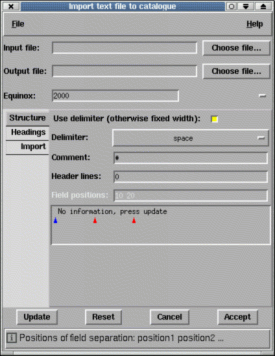

Just choose the file and press update. Now press the "Import" tab and you should be able to see the various columns that have been extracted. Now go to the "Headings" tab and identify which columns contain the ra, dec, x, y and identifier data. Leave any that you do not have unset. Now press "Accept" (unless the "Output file:" field is shown, in which case name the output file too).
If your data have any header lines to ignore then set the "Header lines:" value to the number to skip (note that the first line extracted from the file is shown). You can also ignore comment lines by defining the comment character(s). Note these must be the character at the start of the line.
This follows the same scheme as above, just select the appropriate delimiter.
The only way in which you can import files that do not contain obvious delimiters is by using fixed widths. To do this de-select the "Use delimiter:" button, name your file and press the update button. This will display the first (non-comment or header) line of your file in the region just below the "Field positions:" entry.
Now you need to either enter the column numbers of the start for each field (press <Return> after doing this and the red triangles will display the correct positions), or use the interactive facilities to identify the separating columns.
The red triangles identify the separations and can be moved along the line by dragging them. New identifiers can be created by clicking on the blue triangle and then dragging the new red triangle into place.
Red triangles can be deleted by pressing mouse button 2 over them.
When you're happy with the field positions press "Update" and examine the results in the "Import" tab. Remember to identify the coordinate columns before exiting.